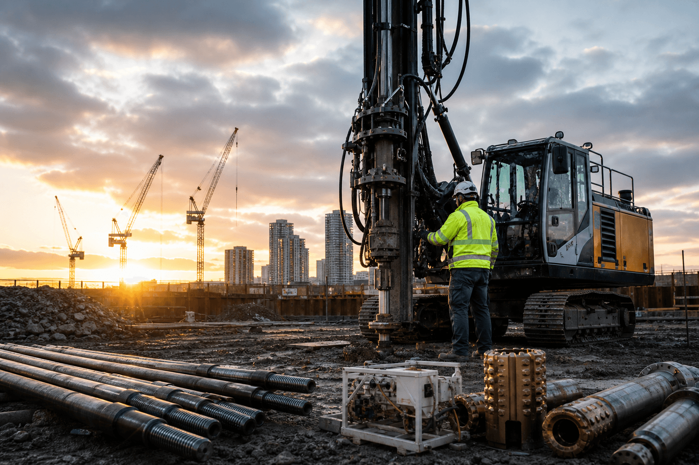
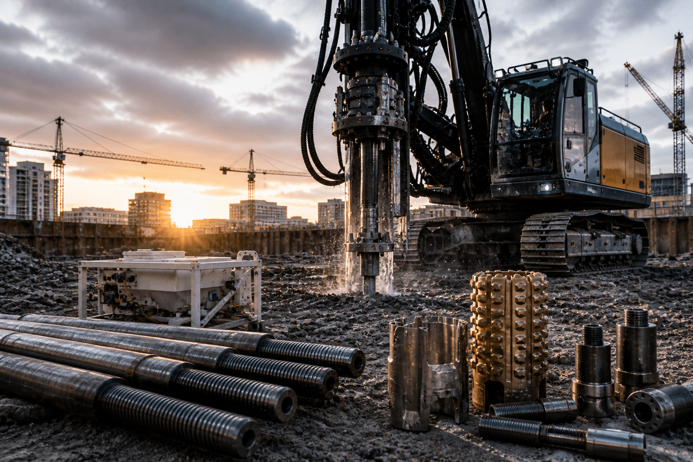
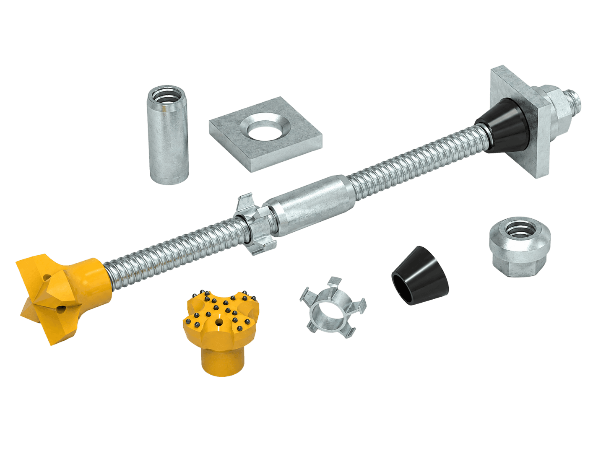

Specialiserade produkter för modern grundläggningsteknik
Vi fokuserar på funktion, produktionseffektivitet och teknisk precision — produkter som håller i verkliga förhållanden och under verkliga krav.
Visa projekt
Nordic Anchor & Steel Pile Supply AB – NASPS
Specialiserade produkter för modern grundläggningsteknik.
Nordic Anchor & Steel Pile Supply AB (NASPS) är en specialiserad leverantör av tekniska system och komponenter för grundläggning, geoteknik och infrastruktur. Vi tillhandahåller självborrande stag, stålpåle- och låslösningar, injekteringsutrustning, borrverktyg och tillhörande tillbehör till entreprenörer som arbetar i tekniskt krävande markförhållanden i Norden och Europa. Vårt sortiment är valt och utvecklat med fokus på bärförmåga, installationseffektivitet, måttnoggrannhet, beständighet och beprövad funktion i fält. NASPS stöttar projekt där tillförlitlig lastöverföring, effektiv borrning, kontrollerad injektering och robusta utförandemetoder är avgörande för ett säkert och kostnadseffektivt byggande.

"Genom vårt arbete med grundläggning, teknik och infrastruktur bidrar vi till tryggare samhällen och mer motståndskraftig bebyggelse.
Varje projekt bidrar till stabiliteten under bostäder, arbetsplatser, transportsystem och samhällsviktig infrastruktur.
I takt med att vi växer internationellt växer också vår möjlighet att göra skillnad för människor, familjer och samhällen."
PRODUKTER
HTP Roller 400
Grip för att hantera och gänga rörskarvar och borrstänger. Gripfunktion och rörrotation i ett redskap, manövrerat från grävmaskinen eller med fjärrkontroll.
R Thread Self Drilling Anchor Bolt System
R Thread självborrande stagsystem utför borrning, injektering och förankring i ett moment. Enkelt att hantera och utan risk för att borrhålet rasar. Lämpligt för instabila förhållanden.
T thread self drilling hollow rock bolt
T Thread självborrande bergbultar, med ett brett dimensionsområde och högre bärförmåga. Används i komplicerade, lösa och uppspruckna markförhållanden samt i trånga utrymmen.
Hot-dip Galvanizing Rock Bolts System
R Thread självborrande stagsystem utför borrning, injektering och förankring i ett moment. Enkelt att hantera och utan risk för att borrhålet rasar. Lämpligt för instabila förhållanden.
Duplex Coating Rock Bolt
Duplexbelagd bergbult är en förstärkningsmetod med bättre korrosionsskydd, där varmförzinkning kombineras med epoxibeläggning. Ytan blir hårdare och beläggningen flagnar inte.




HTP Roller 400
HTP Roller 400 är ett redskap för hantering av borrade pålar och borrstänger, och för att gänga pålskarvar. Vridmoment 5500 Nm vid 310 bar, käftöppning 800 mm och en maximal hanteringslast på 2500 kg.
Läs merR Thread Self Drilling Anchor Bolt System
R Thread självborrande stagsystem består av ihåligt stag, mutter, bricka, skarvhylsa, borrkrona och centrering. De ihåliga stagen kan kapas och förlängas med skarvhylsa efter behov.
Läs merT thread self drilling hollow rock bolt
Vi förnyar utomhusmiljöer med visionär design som förenar estetik och funktion, och skapar platser med tydligt syfte som flyttar fram gränserna för utomhuslivet.
Läs merHot-dip Galvanizing Rock Bolts System
Det avrostade staget och tillbehören doppas i flytande zink under en viss tid, så att atomerna tränger in i och diffunderar med varandra. Då bildas ett järn-zinkskikt som är tätt, jämnt, fast förankrat, blankt och korrosionsbeständigt.
Läs merDuplex Coating Rock Bolt
Duplexbeläggning kombinerar varmförzinkning och epoxibeläggning. Produkten varmförzinkas först, därefter sprutas epoxipulver på ytan. Efter de två behandlingarna får staget bättre korrosionsskydd och längre livslängd. Det står emot både vanlig kemisk korrosion och klarar sura miljöer samt elektrokemisk korrosion med vagabonderande strömmar.
Du är i trygga händer
Engagerad kompetens, nära samarbete


Kontakta NASPS
Samarbete, förfrågningar eller bara ett hej.
Hör av dig i dag, så följer vi med hela vägen från projektering till färdigt bygge.